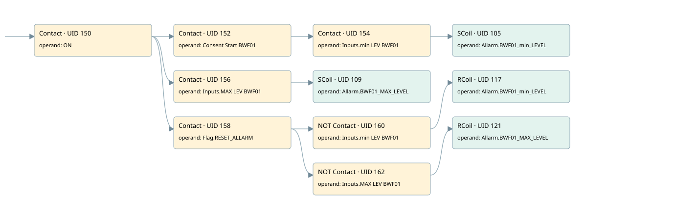

bwf01
allarms 1 · 검색 색인 순서 2 · 원본 내부 NID 추정 2
백업 PLF 원본의 3033234 바이트 위치에서 복원한 XML. 검색 문서 1782의 객체 키 161022005462000000000000와 연결했다. 이름 해석 11/11개. 남은 RefId는 상수 또는 미해석 참조다.
연결 구조 다시 그리기
원본 Part/PCon/Wire를 이용한 연결도다. TIA 화면의 래더 배치 또는 실행 결과를 재현한 그림은 아니다. 핀 연결은 아래 표와 원본 XML을 기준으로 읽는다. 노드 위에 마우스를 두면 피연산자 이름을 볼 수 있다.

접점·코일·블록과 피연산자
| Part UID | Gate | Negated 핀 | 연결 피연산자 |
|---|---|---|---|
| 150 | Contact | operand = ON | |
| 152 | Contact | operand = Consent Start BWF01 | |
| 154 | Contact | operand = Inputs.min LEV BWF01 | |
| 105 | SCoil | operand = Allarm.BWF01_min_LEVEL | |
| 156 | Contact | operand = Inputs.MAX LEV BWF01 | |
| 109 | SCoil | operand = Allarm.BWF01_MAX_LEVEL | |
| 158 | Contact | operand = Flag.RESET_ALLARM | |
| 160 | Contact | operand | operand = Inputs.min LEV BWF01 |
| 117 | RCoil | operand = Allarm.BWF01_min_LEVEL | |
| 162 | Contact | operand | operand = Inputs.MAX LEV BWF01 |
| 121 | RCoil | operand = Allarm.BWF01_MAX_LEVEL |
접점 경로를 펼친 조건식
Contact·O/A·비교기의 원본 연결을 읽기 쉽게 펼친 보조 해석이다. POWER는 전원 레일 시작을 뜻한다. 호출 블록·에지·타이머의 내부 동작과 다중 쓰기 순서는 이 표로 실행 검증하지 않았다. 미해석 핀과 RefId는 원문 연결표에서 확인한다.
| UID | 동작 | 대상 | 원본 접점 경로 | 내용 |
|---|---|---|---|---|
| 105 | SCoil | Allarm.BWF01_min_LEVEL | ((ON AND Consent Start BWF01) AND Inputs.min LEV BWF01) | 조건 성립 시 Set |
| 109 | SCoil | Allarm.BWF01_MAX_LEVEL | (ON AND Inputs.MAX LEV BWF01) | 조건 성립 시 Set |
| 117 | RCoil | Allarm.BWF01_min_LEVEL | ((ON AND Flag.RESET_ALLARM) AND NOT [Inputs.min LEV BWF01]) | 조건 성립 시 Reset |
| 121 | RCoil | Allarm.BWF01_MAX_LEVEL | ((ON AND Flag.RESET_ALLARM) AND NOT [Inputs.MAX LEV BWF01]) | 조건 성립 시 Reset |
원본 배선 연결
| Wire UID | 동일 Wire 연결 끝점 |
|---|---|
| 164 | Powerrail {} ↔ Part 150.in |
| 133 | ORef 122 (ON) ↔ Part 150.operand |
| 151 | Part 150.out ↔ Part 152.in ↔ Part 156.in ↔ Part 158.in |
| 134 | ORef 123 (Consent Start BWF01) ↔ Part 152.operand |
| 153 | Part 152.out ↔ Part 154.in |
| 135 | ORef 124 (Inputs.min LEV BWF01) ↔ Part 154.operand |
| 155 | Part 154.out ↔ Part 105.in |
| 137 | ORef 125 (Allarm.BWF01_min_LEVEL) ↔ Part 105.operand |
| 138 | ORef 126 (Inputs.MAX LEV BWF01) ↔ Part 156.operand |
| 157 | Part 156.out ↔ Part 109.in |
| 140 | ORef 127 (Allarm.BWF01_MAX_LEVEL) ↔ Part 109.operand |
| 141 | ORef 128 (Flag.RESET_ALLARM) ↔ Part 158.operand |
| 159 | Part 158.out ↔ Part 160.in ↔ Part 162.in |
| 142 | ORef 129 (Inputs.min LEV BWF01) ↔ Part 160.operand |
| 161 | Part 160.out ↔ Part 117.in |
| 144 | ORef 130 (Allarm.BWF01_min_LEVEL) ↔ Part 117.operand |
| 145 | ORef 131 (Inputs.MAX LEV BWF01) ↔ Part 162.operand |
| 163 | Part 162.out ↔ Part 121.in |
| 147 | ORef 132 (Allarm.BWF01_MAX_LEVEL) ↔ Part 121.operand |
식별자 해석 근거 11개
| ORef UID | RefId | 이름 | IdentXmlPart 파일 | 해석 방법 |
|---|---|---|---|---|
| 122 | 1 | ON | 0658-IdentXmlPart.xml | UID/RID + search-text + NID agreement |
| 123 | 3 | Consent Start BWF01 | 0658-IdentXmlPart.xml | UID/RID + search-text + NID agreement |
| 124 | 258 | Inputs.min LEV BWF01 | 0657-IdentXmlPart.xml | UID/RID + search-text + NID agreement |
| 125 | 15 | Allarm.BWF01_min_LEVEL | 0657-IdentXmlPart.xml | UID/RID + search-text + NID agreement |
| 126 | 259 | Inputs.MAX LEV BWF01 | 0657-IdentXmlPart.xml | UID/RID + search-text + NID agreement |
| 127 | 17 | Allarm.BWF01_MAX_LEVEL | 0657-IdentXmlPart.xml | UID/RID + search-text + NID agreement |
| 128 | 13 | Flag.RESET_ALLARM | 0657-IdentXmlPart.xml | UID/RID + search-text + NID agreement |
| 129 | 258 | Inputs.min LEV BWF01 | 0657-IdentXmlPart.xml | UID/RID + search-text + NID agreement |
| 130 | 15 | Allarm.BWF01_min_LEVEL | 0657-IdentXmlPart.xml | UID/RID + search-text + NID agreement |
| 131 | 259 | Inputs.MAX LEV BWF01 | 0657-IdentXmlPart.xml | UID/RID + search-text + NID agreement |
| 132 | 17 | Allarm.BWF01_MAX_LEVEL | 0657-IdentXmlPart.xml | UID/RID + search-text + NID agreement |
검색 코드 보조 자료
참조 명칭을 찾기 위한 자료이며 실행 순서나 AND/OR 관계는 위 연결표로 확인한다.
"on" "consent start bwf01" "inputs"."min lev bwf01" "allarm".bwf01_min_level "inputs"."max lev bwf01" "allarm".bwf01_max_level "flag".reset_allarm "inputs"."min lev bwf01" "allarm".bwf01_min_level "inputs"."max lev bwf01" "allarm".bwf01_max_level